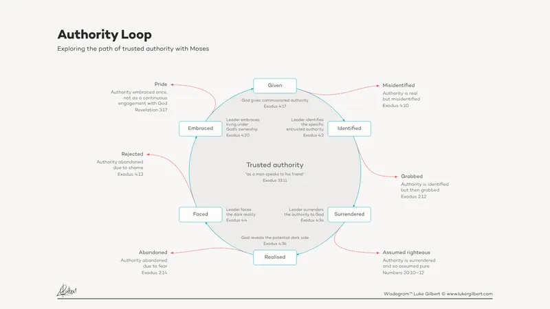
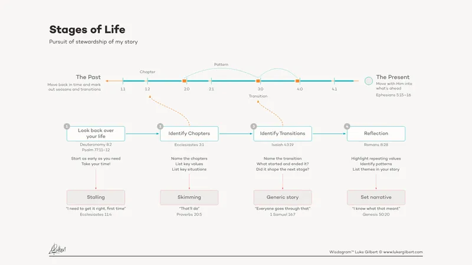
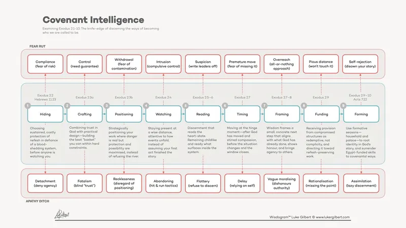
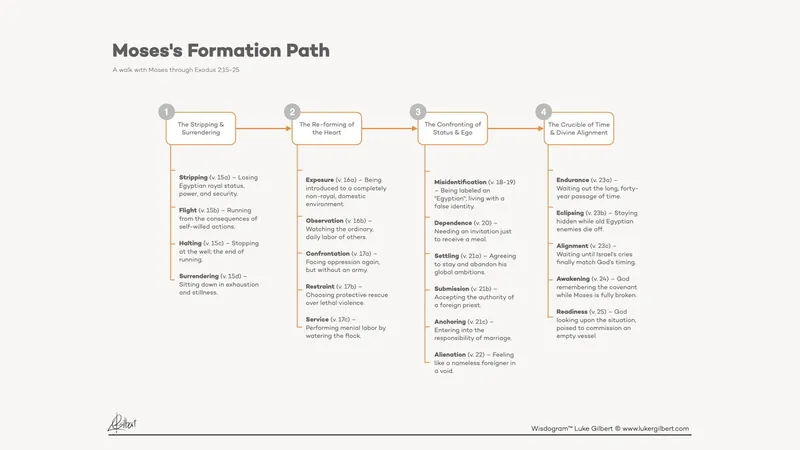
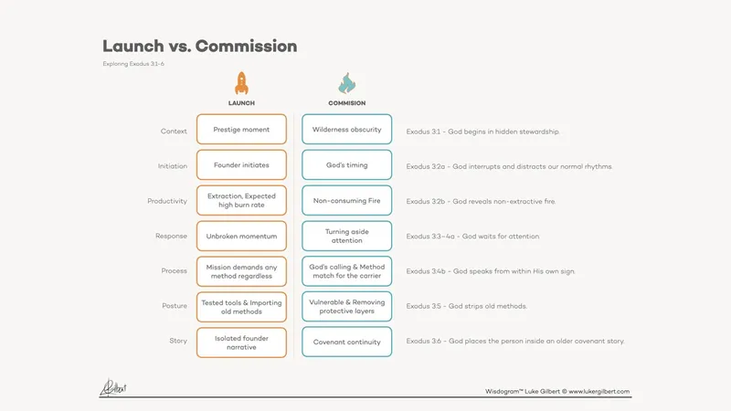
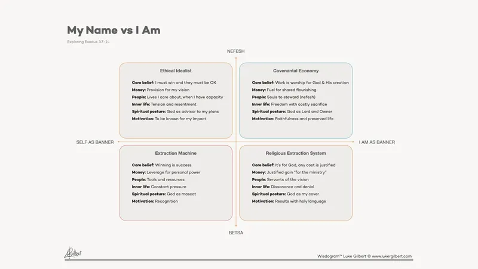
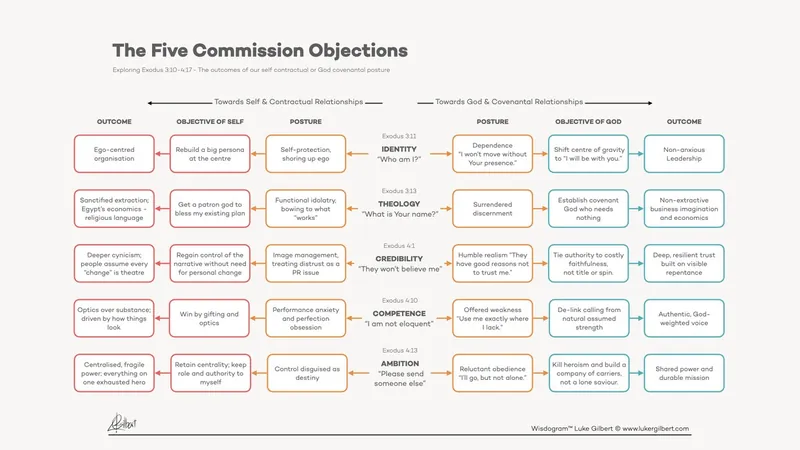
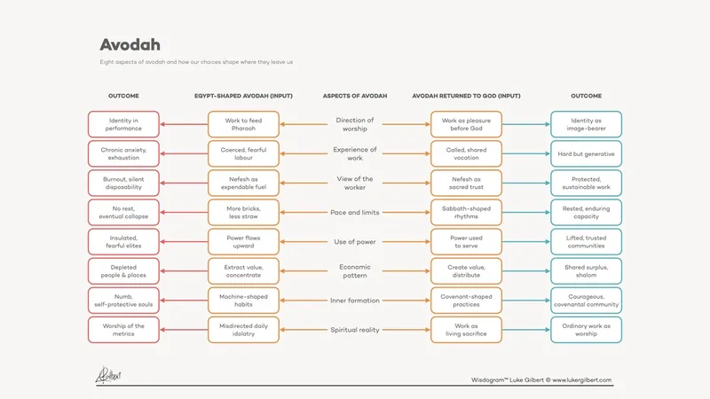
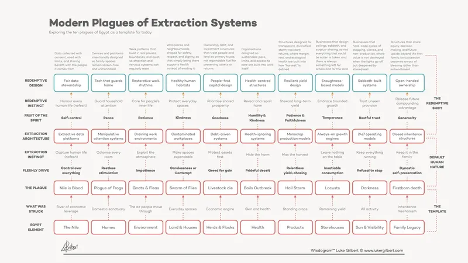

Wisdogram® library
Find the wisdom for where you are
Every Wisdogram maps one timeless truth so you can find yourself in it. Search by what you’re facing, a Bible verse or a word. 11 open now, 148 on the way.
All Wisdograms
 Open now
Open nowTension of Stewardship

Open nowAuthority Loop

Open nowStages of Life
 Open now
Open nowTension of Kingdom Desire

Open nowCovenant Intelligence (Exodus 2)

Open nowMoses's Formation Path

Open nowLaunch vs Commission

Open nowMy Name vs I Am

Open nowThe Five Commission Objections

Open nowEight Aspects of Avodah

Open nowModern Plagues of Extraction Systems
What is a Wisdogram?
A Wisdogram simplifies a timeless truth, maps it so you can see it, and helps you find yourself in it. Each one brings together age-old biblical wisdom, a practical way to live it today, and a simple visual map you can locate yourself in, with scripture on every part.
Every Wisdogram is listed here. As each one is redrawn and rolled out it opens fully, with a free walkthrough on What Matters, my Substack. Search by a struggle, a theme or a Bible reference to see every Wisdogram that draws on it.